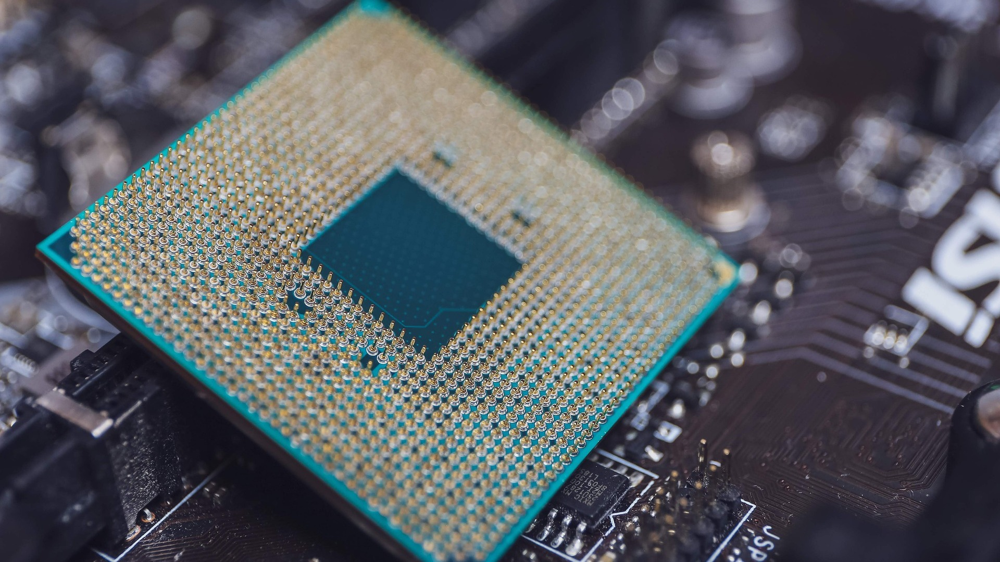

AMD presenta su nueva línea de procesadores
La compañía de tecnología AMD ha lanzado al mercado su nueva línea de procesadores, que
prometen ser más rápidos y eficientes que sus predecesores. Uno de los modelos más destacados es el que
se muestra en la imagen, con un diseño renovado y mejoras en su capacidad de procesamiento.
Una de las características más notables de este procesador es su parte inferior, que cuenta con un
conjunto de pines que permiten una conexión más estable y rápida con la placa madre. Además, su
construcción robusta y resistente asegura una durabilidad excepcional, lo que lo convierte en una
excelente opción para usuarios exigentes y aplicaciones de alta exigencia.
Si estás buscando un procesador de alta calidad y rendimiento, no dudes en considerar esta nueva línea
de AMD. Con sus características innovadoras y su calidad probada, seguramente no te decepcionará.